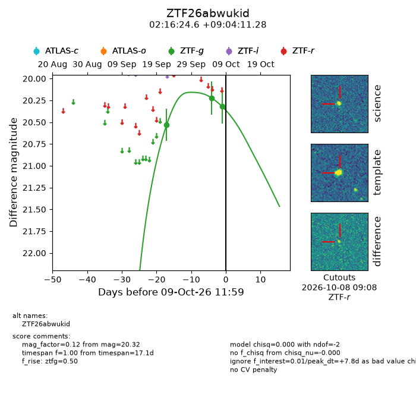
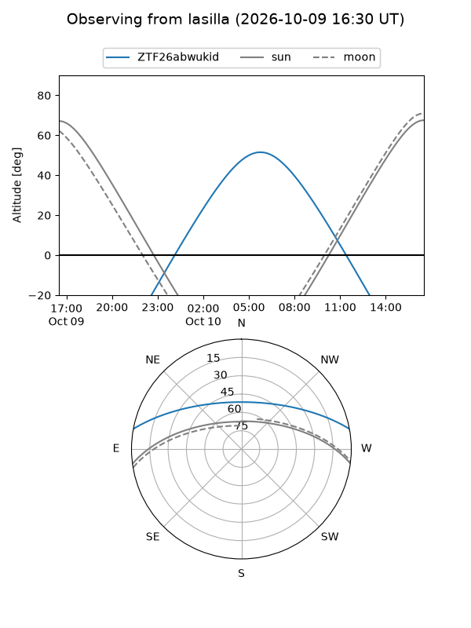
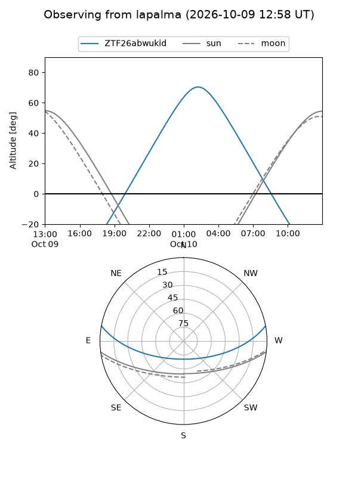
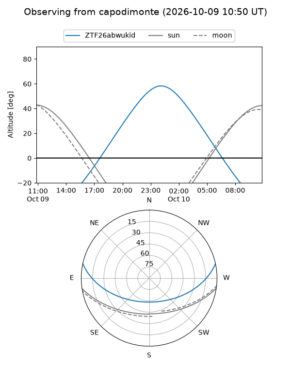
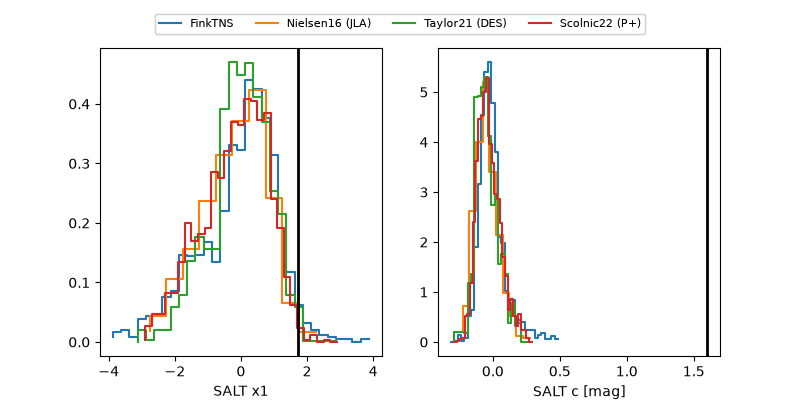

ZTF26abwukid
Target ZTF26abwukid at 2026-10-09 12:01
Aliases and brokers:
FINK-ZTF: ztf.fink-portal.org/ZTF26abwukid
Lasair-ZTF: lasair-ztf.lsst.ac.uk/objects/ZTF26abwukid
ALeRCE-ZTF: alerce.online/object/ZTF26abwukid
Direct TNS query: direct search
alt names
ZTF26abwukid (ztf,fink_ztf)
Coordinates:
equatorial (ra, dec) = 34.1026,+9.06980
equatorial (HMS+DMS) = 02:16:24.61,+09:04:11.28
galactic (l, b) = (155.5081,-48.35387)
Flags:
peak dt: +7.8
Photometry:
last ztfg=20.32
3 ztfg detections
Lightcurve

Visibility



Additional plots
